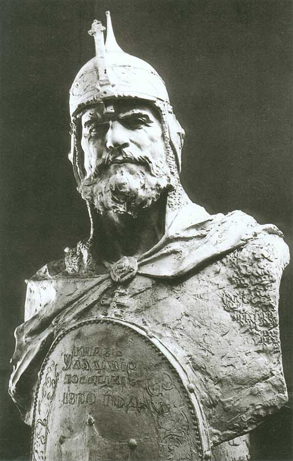
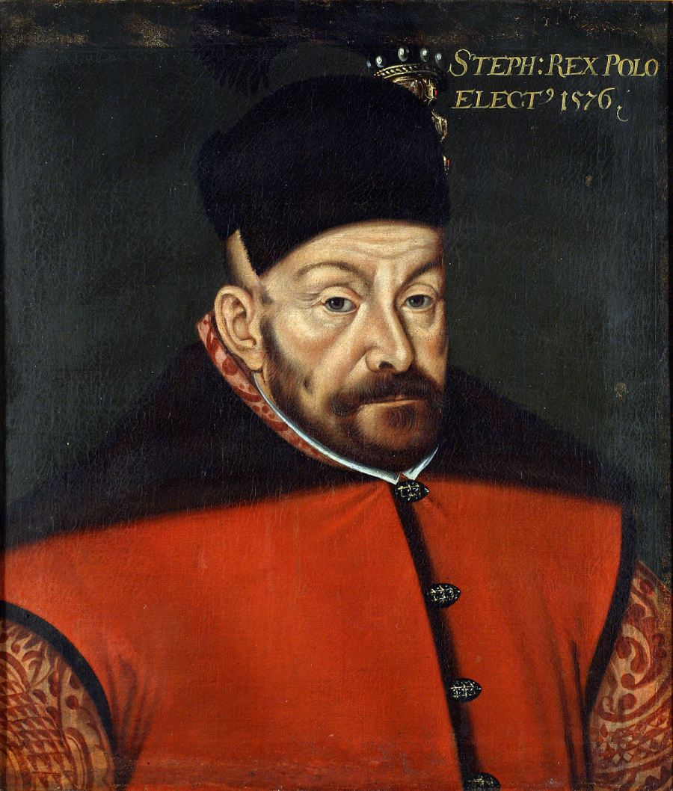
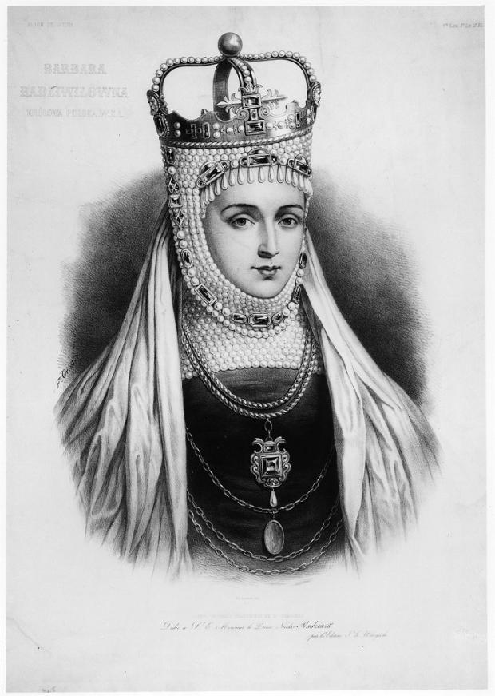
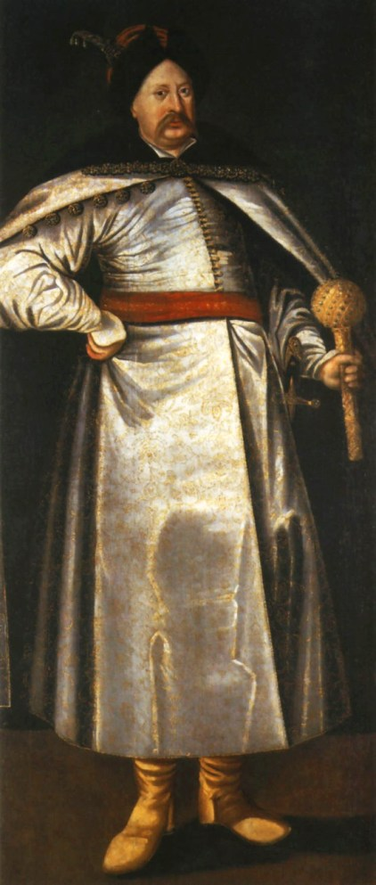
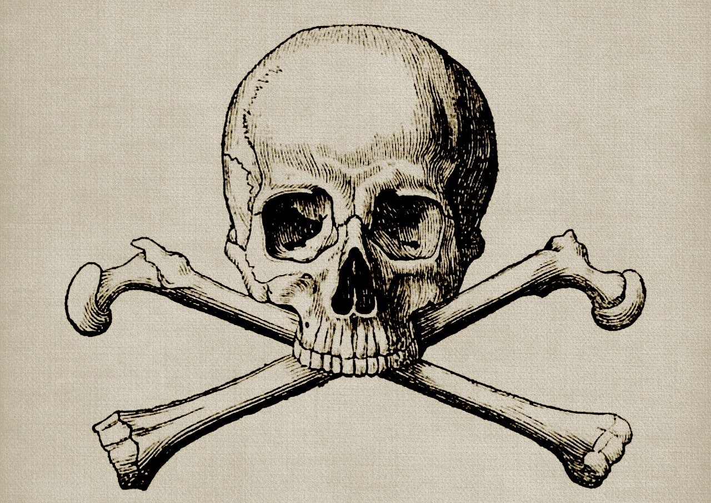

ЛЮДИ
Отравления в истории Беларуси.
Применение ядов в борьбе за власть
Полоцкий Владимир
Одной из самых старых историй с отравлением считается история 13 века. К князю Владимиру в Полоцк в 1216 году приехали из племен эстов послы, которые предложили князю пойти в совместный поход на крестоносцев. Славный военными походами князь согласился, и в тот самый момент, когда к походу было готово уже всё, и военачальник поднялся на палубу корабля – случилось непредвиденное. Князь упал замертво. Эта неожиданная смерть перед походом не была похожа на случайность. Многие предполагали, что князь был отравлен.
Сыновья Витовта
Спасаясь от смерти после случившегося предательства польского короля Ягайло, обманутый Витовт решил заключить с крестоносцами союзный договор. Чтобы данный договор закрепить, жена князя – Смоленская Анна – оставила в качестве заложницы орденскому магистру себя с сыновьями. Через некоторое время к супругу Анну решили отпустить, тот же ей сказал, что ситуация изменилась.
Напуганный военным успехом Витовта Ягайло решил предложить тому титул князя Литвы взамен на мирный договор. Заключенный ранее договор с крестоносцами Витовт планировал разорвать. Жена догадывалась, чем это угрожает сыновьям, но Витовта не предавала. Со временем пришла новость, что сыновей Иванко и Юрия отравили.
Ильинич Станислав
Не секрет, что у замка в Мире кровавая история. Строил его некогда Ильинич Юрий, который совсем не жаловал сыновей. Завещание отца сыновьям не адресовывалось, что привело в дальнейшем к достаточно кровавой дележке наследства, после которой замок в итоге достался Станиславу – сыну третьему по старшинству.
Правил тот замком года четыре, пока на одном из пиров его не отравили. Позднейшее расследование выявило, что отравила его некая Новицкая, супруга одного из слуг. Отравительница после следствия была сожжена.
Баторий Стефан
В 1586 году 4 декабря монарх охотился на кабанов в Кудинском лесу. Возвратился он больным, но на следующие сутки был уже на мессе в кафедральном костеле. Возвратившись после мессы король терял сознание, у него проявились судороги. Не разобравшись с недугом доктора прописали больному пиявок, и уже в декабре 12-го Стефан скончался.
После столь быстрой кончины стали ходить слухи об отравлении монарха. Подозревались все, и даже лекари правителя. Симоний врач стал автором брошюры, в которой обвинял другого врача Бучелло Николая. Тот написал обвинительную брошюру на доктора Симония. Полемика между врачами затянулась на три года, но ясности в итоге полемика так и не принесла. До этого не ясно, от чего скончался Баторий – от яда или от запущенной почечной болезни.
Радзивилл Барбара
История об этом отравлении считается самой известной. Монарх Август Жигимонт обручился с Радзивилл Барбарой вопреки материнской воле. Последующая скоротечная смерть молодой женщины была настолько выгодной для политических сил Польши, что даже не было мысли о естественности данной кончины. Да и не случайно итальянский род матери короля был известен хитроумными отравлениями. Как рассказывает легенда, на глазах невестки Бонна нарезала яблоко на две половины. Одну половинку взяла для себя, а вторую отдала Барбаре. Яд же был на ноже с одной из его сторон.
Болела Барбара достаточно тяжело, но даже не смотря на тяжелый запах от нее король до последней минуты не отходил от любимой.
Уже современные врачи, знакомясь с этой историей, предполагают в качестве возможных причин также и онкологию, а мать короля запомнилась в истории как знаток ядов.
Сфорца Бонна
Имя Бонны Сфорцы в истории не единожды связывается с отравлениями. Рассорившись в пух и прах с сыном, который обвинял королеву в кончине возлюбленной, Бонна решила возвратиться на родину. Еще в 1557 году в октябре женщина писала пылкое письмо с ругательствами сыну и заверениями в отличном своем здоровьи. Но уже в середине ноября женщина скончалась. Предполагается, что королеву отравить могли по приказам Габсбурга Филиппа, который задолжал даме крупную сумму.
Радзивилл Анна и ее сыновья
Анна родила старому князю Мазовецка сыновей, а когда овдовела управлять решила сама. Однако тут она полюбила симпатичного шляхтича Жилинского Анджея, который забирать стал власть себе. Княжеская шляхта стала требовать от управления вдову отдалить, та же обратилась за разбирательством к королю, который внезапно овдовел. Мазовецкая решила воспользоваться шансом, но король Сигизмунд красотой вдовы не вдохновился, а в супруги выбрал итальянку Сфорцу Бонну, которая, как мы уже помним, на свою власть не терпела претензий.
В скором времени скончались сыновья Анны, а затем и сама она. Не удивительно, что стали шептаться о яде. В качестве виновницы назвали Катажину, возлюбленную наследников Анны. Предполагаемую виновницу было решено сжечь, а княжество с названием Мазовецк решено было включить в Польское королевство.
Ивановна Елена
Елена – одна из дочерей царя Москвы и вдова Александра, монарха королевства Польши – захотела возвратиться на родину не смотря на не согласие нового Польского правителя Жигимонта первого. Королева хотела свободу, и возврата своих многочисленных богатств, которые были оставлены на хранение в Вильно в ордене францискансцев. Елену задержали и возвратили в Троки, а спустя некоторое время она умерла. В одной из хроник было обозначено, что царевну московскую отравил согласно приказам Радзивилла Николая ключник.
Радзивилл Януш
В Тиинском почти захваченном врагами замке в 1655 году скончался неожиданно в сложные достаточно кровавые времена гетман по имени Радзивилл Януш. Брат Януша Богуслав появившись в замке и взглянув на тело скончавшегося заявил, что тот был отравлен. Виновным Богуслав назвал политического противника Януша – Павла Яна Сапегу.
Кончина крепкого сорока трех летнего гетмана, который не жаловался на свое самочувствие, не похожа была на случайность. Предполагают, что он либо было отравлен, либо сам решил принять яд, отметив близкий крах грандиозных планов. Брат Богуслав укрепил Тиинск, и кинулся за Сапегой вслед. Через два года крепость Сапегами была взята, а тело Януша отправлено было в Несвиж.
